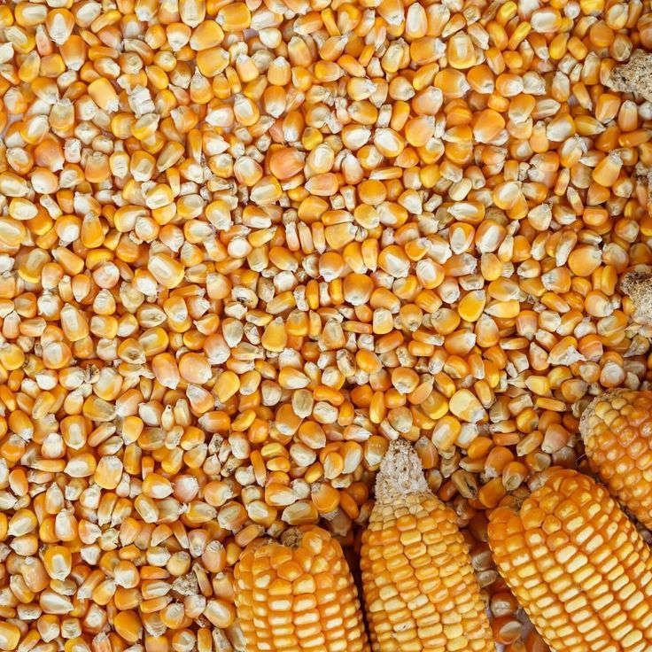

AGRI TOGO
"Valorisons les produits locaux"
Chiffres Clés
500+
Membres actifs
2+
Regions couverts
100+
Produits disponibles
Actualités

Actualité 1
Aujourd'hui, face aux défis climatiques et démographiques, l'agriculture se transforme pour devenir plus durable
et respectueuse de l'environnement, conciliant les savoir-faire traditionnels avec les innovations technologiques pour nourrir l'avenir..

Actualité 2
Ce secteur reste le cœur battant de nombreuses communautés, garantissant non seulement la subsistance des familles mais aussi la vitalité
économique locale. Il incarne le lien direct entre l'effort humain, la générosité des sols et la souveraineté alimentaire.

Actualité 3
Cette image met en valeur la récolte de l'arachide, une culture majeure pour l'alimentation et l'économie locale. Elle illustre avant tout la
dimension sociale de l'agriculture : le travail d'équipe, l'entraide et la fierté partagée d'une communauté rurale face aux fruits de ses efforts..

Actualité 4
Elle souligne l'importance des tubercules dans l'alimentation quotidienne et la transformation locale (gari, farine, tapioca). Au-delà de l'aspect
agricole, c'est un vibrant hommage à la jeunesse et aux agriculteurs qui garantissent la sécurité alimentaire et dynamisent l'économie rurale.